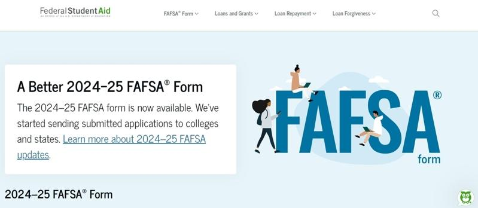

不论向哪个单位申请奖助学金，几乎都需要一分「联邦学生援助申请表」(Free Application for Federal Student Aid，简称FAFSA)；联邦政府去年12月底公布最新版表格，也就是2024-2025学年度FAFSA表，与行之多年的旧版表格相较，联邦援助计算公式变得宽松、待答问题减少、税赋数据自动由国税局导入，基本上更简化友善。
★联邦援助计算公式更宽松友善
理财消息媒体「钱」(Money)援引教育部数据指出称，新版FAFSA采用新的计算方法，比旧版更宽松，获联邦佩尔助学金(Pell Grant)的低收入学生可望增加61万人。而且，约150万名学生将有资格获最高佩尔助学金金额。该媒体进一步解释，根据新公式，佩尔助学金资格将根据联邦贫困线的家庭收入和家庭规模来确定，而不像以前那样根据「家庭应付部分」(Expected Family Contribution，即：父母及升大学子女，一家应该先负担的大学费用)断定。此外，收入界线将会把学生是独立或受抚养，以及他们是否来自单亲家庭等因素纳入考量。
★待答问题减少
根据加州个人理财公司Nerdwallet，采用2024-2025 FAFSA新表格后，申请人可根据自己的情况略过26个问题，有些人甚至只需要回答新表格上的18个问题；相较之下，2023-24年FAFSA有多达103道问题。
★税务资讯自动导入
Money报导称，新FAFSA表格中有关学生和家长的大部分财务资讯，将通过先进数据共享系统直接从国税局导入。如此一来，再也不必像过去那样寻找旧报税表，并且一笔笔输入资讯。不过，申请人必须同意进行这样的资讯转移。
★可列出更多大学
填表学生最多可在最新版的在线FAFSA表格列出20所大学，是先前十所上限的两倍。
★提供更多语言版本
以前申请仅提供西班牙语和英语版本。根据Nerdwallet的说法，更新后，将提供美国最常用的11种语言提供翻译服务，包括中文、法语、海地克里奥尔语、乌尔都语、西班牙语、阿拉伯语、孟加拉语、俄语、韩语、英语。
★取消兄弟姊妹折扣
据「纽约时报」(The New York Times)报导，新版 FAFSA取消对家有多个孩子上大学的折扣，不过，全国学生经济援助管理协会(National Association of Student Financial Aid Administrators)公共政策和联邦关系副总裁麦卡锡(Karen McCarthy)表示，FAFSA表格中仍会询问申请月者家中的大学生人数，各大学在提供奖助学金时可纳入考量。
国会2020年通过「FAFSA简化法案」(FAFSA Simplification Act)，是联邦学生援助发放流程与系统的重大改革，除了与联邦学生援助免费申请表(FAFSA表格)的填写有关，确定联邦援助资格的需求分析、术语变化以及参与联邦学生援助计划的学校政策和程序也都随之调整。